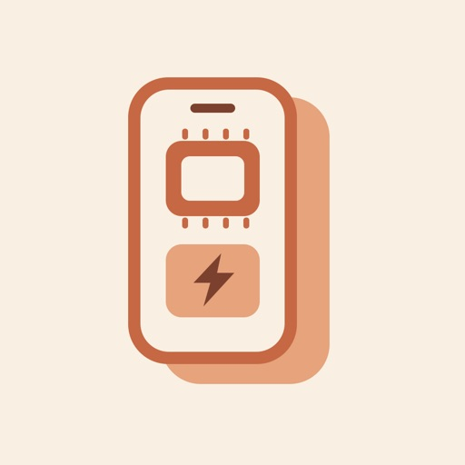

機況 Inside
逐項功能自檢、硬體資訊與充電時鐘。
Guided phone checks, hardware details and a charging clock.
為日常留一點從容。
A little more ease in everyday life.

逐項功能自檢、硬體資訊與充電時鐘。
Guided phone checks, hardware details and a charging clock.
經期紀錄、週期預測與自選提醒。
Period logging, cycle estimates and optional reminders.
收藏截圖、收據與文件，用文字搜尋找回。
Save screenshots, receipts and documents, then find them by text.
植物照片日誌、照護任務與完整備份。
Plant photo journals, care tasks and full backups.
40 個停車關卡，挑戰最多 120 顆星。
40 parking levels with up to 120 stars to collect.